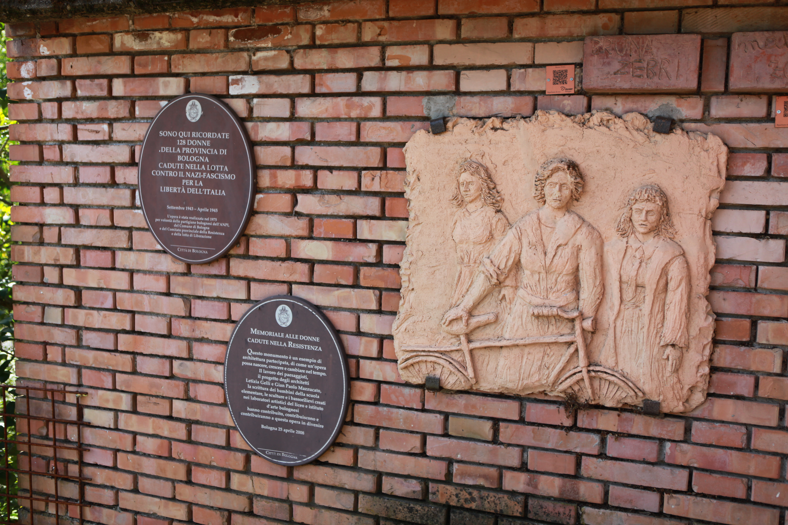

Riordina la lista:
A-Z
Z-A

4 donne armate
fotografiatestimonianza video
Adelia Casari — ricordo dell'inverno 1944
testimonianza orale
Donne di Bologna e provincia!
volantino clandestino
Le donne preparano il pane per i partigiani
fotografia
Memoriale alle donne cadute — Villa Spada
monumento
Schedina ANPI — Abruzzese Antonietta
documento amministrativo
Schedina ANPI — Abruzzese Natalia
documento amministrativo
Schedina ANPI — Accorsi Elena
documento amministrativo
Schedina ANPI — Ballotta Iride
documento amministrativotestimonianza video
Videointervista ad Assunta Masotti
testimonianza orale